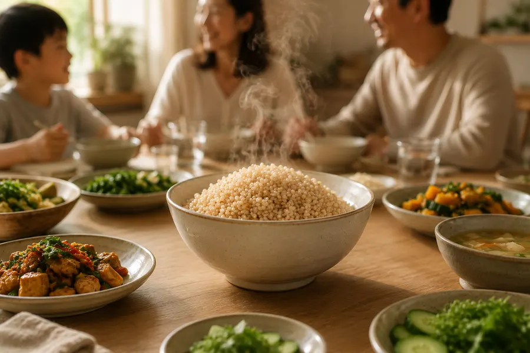
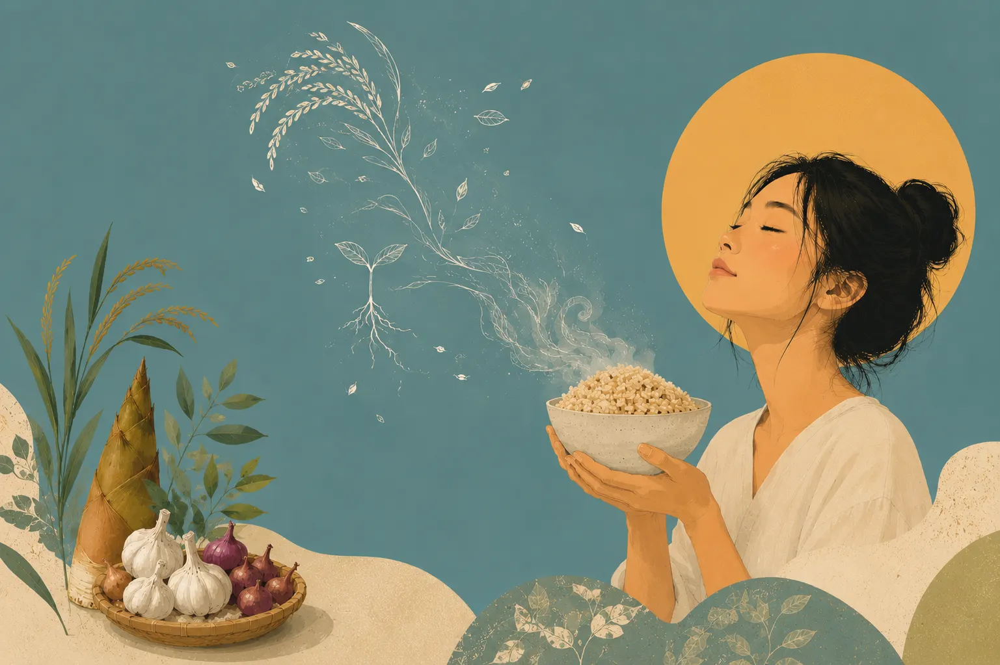
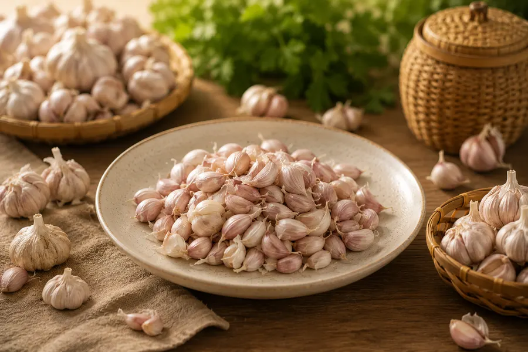
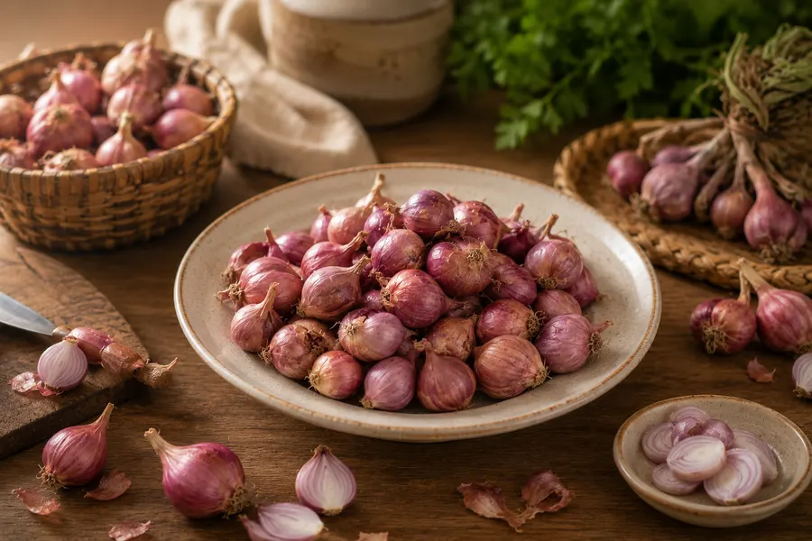
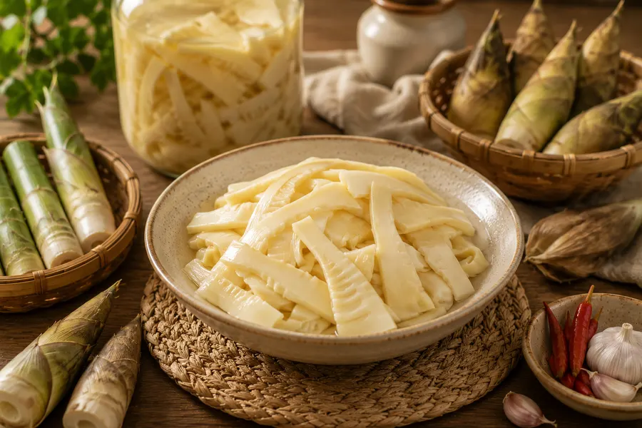
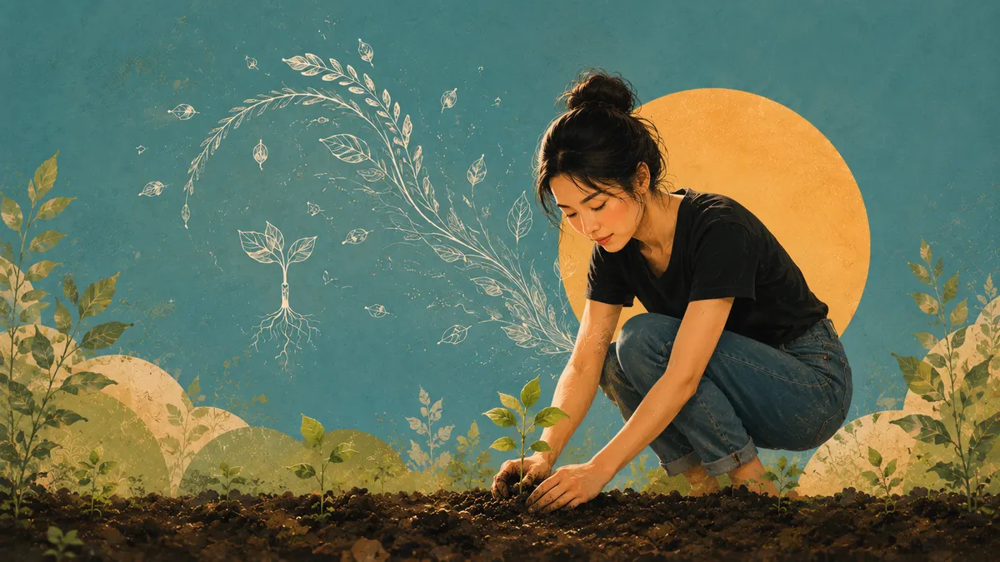
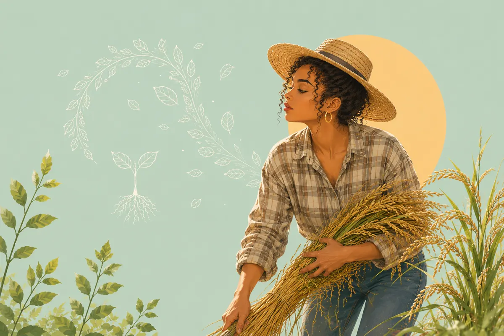

วัตถุดิบอาหารที่เราดูแล ปลอดภัย สะอาด ตั้งแต่ราก
เราดูแลสวนตั้งแต่ผืนดิน ไม่เผา ไม่ใช้สารเคมีอย่างเด็ดขาด รักษาสิ่งมีชีวิตที่อยู่ในสวน ให้อยู่ตามธรรมชาติ
★★★★★ 4.9/5 จากรีวิวกว่า 1,200 รายการ
ไม่ใช้สารเคมี 100%
ไม่มียาฆ่าหญ้า แมลง หรือปุ๋ยเคมีทุกชนิด ในทุกขั้นตอน
ไม่เผา
ไม่เผาตอ ไม่เผาหญ้า ดูแลสิ่งแวดล้อมให้ดีที่สุด
ปุ๋ยหมักจากธรรมชาติ
เศษพืชทับถมคืนสู่ดินทุกอย่าง
ดูแลดิน
ดินดีมาก่อน แล้วผลผลิตดีจะตามมา
ผลผลิตประจำฤดูนี้
เราผลิตเท่าที่ดูแลได้ทั่วถึงจริง จนกว่าจะถึงรอบเก็บเกี่ยวหน้า

กระเทียม
฿140/250ก.
หอมแดง
฿90/250ก.
หน่อไม้ดอง
฿95/300ก.
01
SOIL
ดูแลดินให้ดี
ดินจะดูแลพืชเอง
เราไม่ใช้สารเคมีและไม่เผาแบบ 100% ใช้ปุ๋ยหมักธรรมชาติ เพราะเราดูแลดิน เพื่อให้ดินดูแลพืช
อ่านเรื่องราวของเรา
ดินดี
พืชดี
ชีวิตดี

02
HARVEST
ทำไมของเรา
ถึงมีจำกัด
เราผลิตเท่าที่ดูแลได้จริง จนกว่าจะถึงรอบเก็บเกี่ยวหน้า ความจำกัดที่จริงคือคุณค่าที่เราตั้งใจรักษา
ดูผลผลิตประจำฤดูกาล
มีจำกัด
แต่
มีความหมาย
03
RECIPE
จากสวน
สู่จานคุณ
วัตถุดิบอาหารต้นทางที่สะอาด ปลอดภัย ดูแลโดยปราศจากสารเคมี 100%
ดูวิธีที่เราดูแล
จากสวน
สู่
จานคุณ